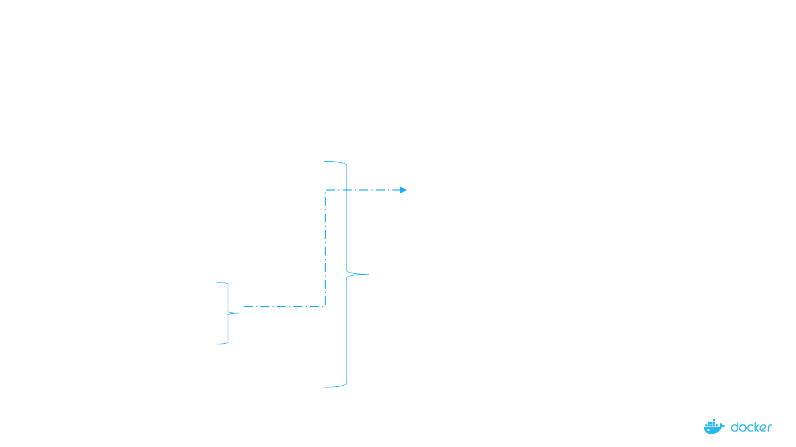
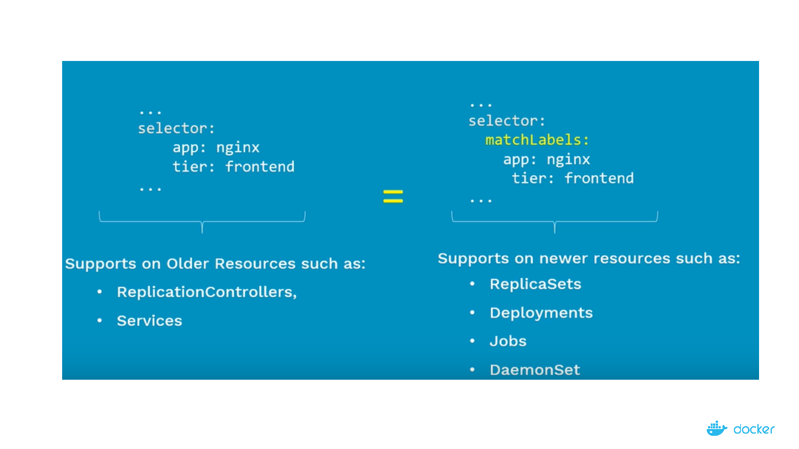
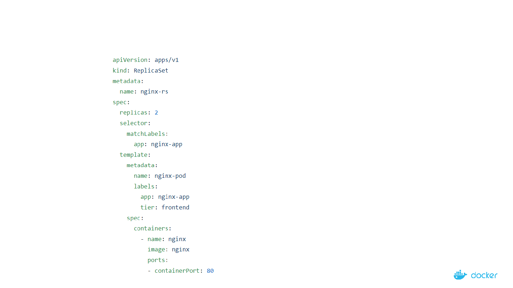
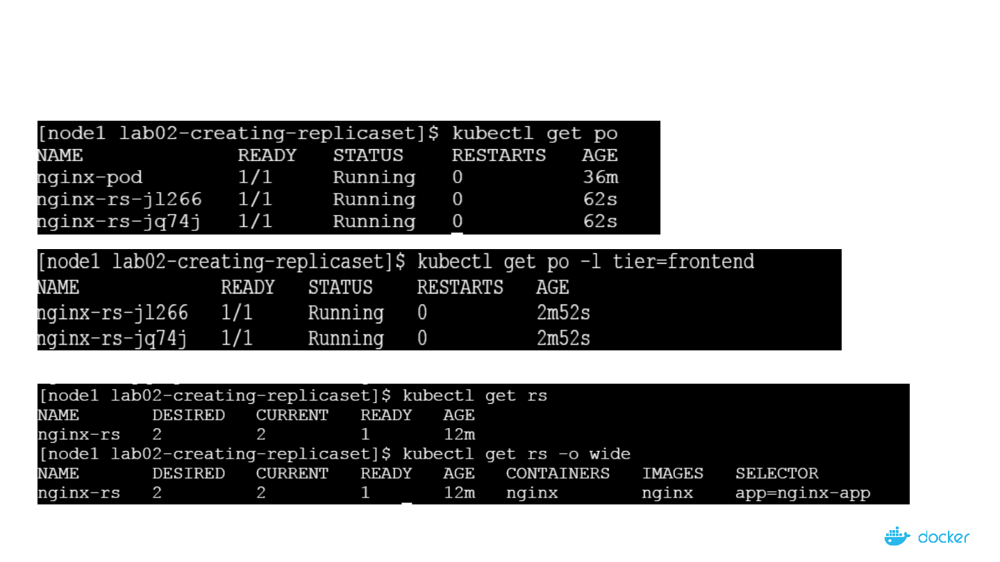

Demystifying
theNuts&Boltsof
Kubernetes
Architecture
ReplicaSet101

2
WhoAmI?
• PrincipalSystemsDevelopmentEngineeratDellEMC
• WorkedwithVMware&CGI
• DockerCaptain|DockerCommunityLeader
• CollabnixSlack–1800+Members
• DockerLabs–500+tutorials
http://www.collabnix.com

Howcanyouensurethatthereare3Podsinstanceswhich
arealwaysavailableandrunningatonepointintime?

WhatisReplicaSetallabout?
MaintainastablesetofreplicaPodsrunningatanygiventime
- EnsuresthataspecifiednumberofPodsarerunningatanytime
a.IfthereareaccessPods,theygetkilledandviceversa
b.NewPodsarelaunchedwhentheygetfailed,getdeletedandterminated
-ReplicaSet&Podsareassociatedwith“labels”

ReplicationControllerVsReplicaSet
- ReplicaSetisthenextgenerationofReplicationController
- Bothservethesamepurpose
ReplicaSetReplicationController
Set-basedSelectors
Equality-basedSelectors

Labels&Selectors
WhenPodsarescaled,howarethesePodsManagedatsuchlargescale?
Pods
Controllers&Services
Labels
Selectors
#Pod-Spec
apiVersion:v1
kind:pod
metadata:
name:nginx-Pod
labels:
app:guestbook
tier:frontend
env:dev
spec:
replicas:5..
7
Equality-basedSelectorsSet-basedSelectors
Operators:
=and==
Examples:
environment=production
tier!=frontend
Commandline:
$kubectlgetpods-lenvironment=production
InManifest:
..
selector:
environment:production
tier:frontend
..
Operators:
innotinexists
Examples:
environmentin(production,qa)
tiernotin(frontend,backend)
Commandline:
$kubectlgetpods-l`enviornmentin(production)
InManifest:
..
selector:
matchExpressions:
-{key:environment,operator:in,values:[prod,qa]}
-{key:tier,operator:Notin,values:[frontend,backend]}
..
Supports:Services,ReplicationController
Supports:Job,Deployment,ReplicaSet,DaemonSet

8

9
ReplicaSetExamples:
§ Manifestfile
§ DeployappusingRS
§ DisplayandvalidateRS
§ Test–NodeFails
§ Test–ScaleUp
§ Test–ScaleDown

10
ReplicaSetManifestFile

11
CreatingNginx-rsPods
$kubectlcreate–fnginx-rs.yaml

12
CheckingthestateofReplicaSet

13
ScalingtheNginxService